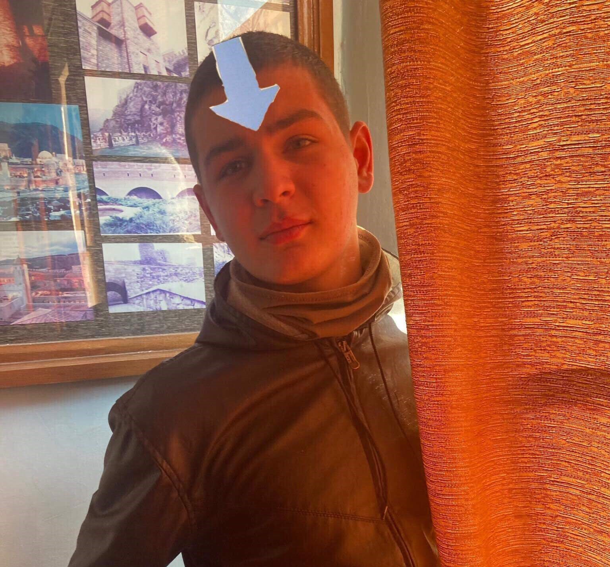
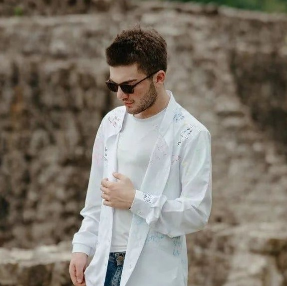

ასოცირებული პირები
დავით გულორდავა
ლუკა სიჭინავა

ნიკოლოზი ჟვანია

ტატო ალანია

დანილა ბერულავა ("Дански Молодой")
დაიბადა 2004 წელს. პირველად გასროკეს 2012 წელს და გადაიყვანეს ზუგდიდის ციხეში.
დავით გულორდავა
ლუკა სიჭინავა
ნიკოლოზი ჟვანია
ტატო ალანია
დანილა ბერულავა ("Дански Молодой")
"მაგი თუ კაი ბიჭი იყო სიმონ რატო იქვე ადგილზე არ მოთხოვა"
"დამალაპარაკე მამა"
"Sage momcem?"
-ნიკა კუპრეიშვილი